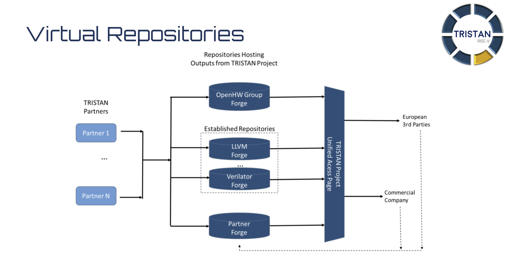

It provides references and descriptions of all the TRISTAN IPs (hardware and software).
It serves as a Virtual Repository page, gathering all the information about the TRISTAN repositories, their status,
and the TRISTAN partners involved in them.
The Tristan Unified Access Page acts like a static page, to provide a single access point to all the repositories TRISTAN
contributes to. The updates and contributions will be upstreamed in the repository themselves.
Some of the repositories are hosted on the OpenHW Group GitHub forge, some are located on other public pages, and some are closed-source. The diagram below shows how the TRISTAN repositories are organized.
The Tristan Unified Access Page is the deliverable of the Task 2 of the Work Package 7 (7.2).
| Repository | URL/Instructions | Project | Working Items | Partners | Status | Description | License |
|---|---|---|---|---|---|---|---|
| CVE2 | CVE2 | TRISTAN | WI2.2.5, WI2.2.8, WI2.5.8 | NXP, Synthara, Politecnico di Torino | Design and Verification in progress | Solderpad | |
| Extensions to the micro-architecture of CV32E40P core | CV32E40P (fork) | TRISTAN | WI2.3.3 | UNIBO | Design and Verification in progress | Solderpad | |
| VSRV1: simple 32-bit Linux RISC-V | To Be Done | TRISTAN | WI2.3.5 | VLSI Solution | Design and Verification in progress | To Be Decided | |
| CVA6 | CVA6 | TRISTAN | WI2.4.1, WI2.4.2, WI2.4.3, WI2.4.5 | Thales, Sysgo, TU Darmstadt, Bosch | Design and Verification in progress | A configurable family of RISC-V application/embedded cores targetting FPGA and ASIC technologies | Solderpad |
| RVV coprocessor for CVA6 | RVV-coprocessor | TRISTAN | WI2.4.4 | ETH | Design and Verification in progress | Solderpad | |
| Timing Channel Protection | timing-channel-protection | TRISTAN | WI2.1.1 | ETH | Design and Verification in progress | Solderpad | |
| UVM env for RISC-V verif | core-v-verif | TRISTAN | WI2.4.1 | Thales | CVA6 verification in progress | Solderpad | |
| Compression and decompression of digital waveforms | Tristan | TRISTAN | WI2.5.11 | semify | Design and Verification in progress | To be determined | |
| TraceUnit | Not published yet | TRISTAN | WI2.1.4, WI2.2.1, WI2.3.4, WI2.5.4 | ACCT, FHG, MNRS, SYSGO | Design and Verification in progress | To be determined | |
| Hypervisor | H-extension | TRISTAN | WI2.5.10 | ETH, Sysgo | Design and Verification in progress | Solderpad | |
| Riviera: RISC-V ISA Extensions for NFC Applications | To Be Done | TRISTAN | WI2.5.1 | NXP Austria, Politecnico di Torino, Technical University of Graz | Design and Verification in progress | To Be Decided |
| Repository | URL/Instructions | TRISTAN | Working Items | Partners | Status | Description | License |
|---|---|---|---|---|---|---|---|
| TSN-TraceBus | Not published yet | TRISTAN | WI3.1.1 | ACCT, BOSCH-DE, FHG, SYSGO | Design and Verification in progress | To be determined | |
| HPDcache | github.com/openhwgroup/cv-hpdcache | TRISTAN | WI3.1.5 | CEA | Design and verification in progress | Solderpad | |
| CLIC | clic | TRISTAN | WI3.1.7 | ETH | Design and Verification in progress | Apache-2.0 | |
| AXI LLC | AXI-LLC | TRISTAN | WI3.1.5 | ETH | Design and Verification in progress | Solderpad | |
| AXI | AXI | TRISTAN | WI3.2.1 | ETH | Design and Verification in progress | Solderpad | |
| eFPGA | I:Embedded-fpga | WI3.4.5 | YNGA | Design in progress | Solderpad | ||
| Accelerator for post-quantum cryptography | To do | TRISTAN | WI3.4.4 | TUM, Politecnico di Torino | Design in progress | To be determined | |
| Low-power IO DMA | IO DMA | TRISTAN | WI3.1.4 | UNIBO | Design and Verification in progress | Solderpad | |
| Heterogeneous Cluster Interconnect (HCI)) | HCI | TRISTAN | WI3.2.2 | UNIBO | Design and Verification in progress | Solderpad | |
| Low-power FP32/FP16 Accelerator for MatMul | RedMule | TRISTAN | WI3.4.1 | UNIBO | Design and Verification in progress | Solderpad |
| Repository | URL/Instructions | Project | Working Items | Partners | Status | Description | License |
|---|---|---|---|---|---|---|---|
| TimeWeaver | absint.com/timeweaver | TRISTAN | WI4.1.5 | AbsInt | Waiting for WI4.1.3 / WI2.2.1 | TimeWeaver is a hybrid measurement-based timing analysis tool to determine the WCET of safety-critical embedded software. As part of TRISTAN, it will be ported to include support for RISC-V processors using the TRISTAN Trace-IP. | proprietary |
| CompCert | github.com/AbsInt/CompCert | TRISTAN | WI4.2.4 | AbsInt | Waiting for WI2.5.4 | CompCert is a formally-verified optimizing C compiler. As part of TRISTAN, it will be extended to support the HSI (hardware-supported instrumentation) interface of the TRISTAN Trace-IP. | dual licensed (see repository) |
| Yocto for CVA6 | meta-cva6-yocto | TRISTAN | WI4.3.3 | Thales | Initial release | A linux image for a CVA6-based embedded processor | MIT |
| Setting up Yocto and baremetal debug on CVA6 | cva6-eclipse-demo | TRISTAN | WI4.3.3 | Thales | Initial release | Guidance to set up baremetal and Linux-based debug on CVA6 | Apache |
| End-to-end stack for ML software development on embedded RISC-V platforms | Plinio | TRISTAN | WI4.4.4 | Politecnico di Torino, UNIBO | Design in progress | Apache 2.0 | |
| CMSIS like Open-Source AI, as well as DSP- and compute (e.g. BLAS) libraries | RiscV-NN | TRISTAN | WI4.4.1 | IFX, Politecnico di Torino, UNIBO, CEA | Design in progress | ||
| COREV GCC | COREV GCC (fork) | TRISTAN | WI4.2.1 | UNIBO | Design and Verification in progress | GPL | |
| COREV Binutils | COREV Binutils (fork) | WI4.2.1 | UNIBO | Design and Verification in progress | GPL | ||
| ELinOS embedded Linux for RISC-V | ELinOS | TRISTAN | WI4.3.2 | SYSGO | To be released in spring 2024 | GPL | |
| PikeOS CVA-6 support | PikeOS | TRISTAN | WI4.3.3 | SYSGO | To be released | proprietary | |
| LLVM TD from ADL | ADLTools | TRISTAN | WI4.2.1, WI4.2.3 | NXP | Design and verification in progress | BSD2 | |
| Cloud Connector | Cloud Connector | TRISTAN | WI 4.3.4 | aicas | Implementation done. Generating usage documentation in progress | GPL | |
| RISC-V Runtime | Not published yet | TRISTAN | WI4.4.1 | CEA | Design and verification in progress | Apache | |
| VxP Tools and Libraries | VXP binutils, VXP Devkit | TRISTAN | WI3.4.2, WI4.2.1, WI4.2.6, WI4.4.1 | CEA | Design and verification in progress | Apache |
| Tool | URL/Instructions | Project | Working Items | Owner/Contributors | Users | Description | License | |
|---|---|---|---|---|---|---|---|---|
| Renode | Renode | TRISTAN | WI5.1.1 | Antmicro | Tampere University, NOKIA, Cargotec | Simulation Framework | ||
| ETISS | ETISS | TRISTAN | WI5.1.2 | Technische Universität München | Infineon | Extendible Translating Instruction Set Simulator | BSD 3-clause | |
| SCC | SCC | TRISTAN | WI5.1.4 | Minres | Bosch-DE, CEA | SystemC Components | ||
| PySysC | PySysC | TRISTAN | WI5.1.4 | Minres | Bosch-DE, CEA | Python bindings for SystemC | ||
| Core DSL | Core DSL | TRISTAN | WI5.1.4 | Minres | Bosch-DE, CEA | Language to describe ISAs for ISS generation and HLS of RTL implementation | ||
| DBT-RISE & DBT-RISE-RISCV | DBT-RISE DBT-RISE-RISCV | TRISTAN | WI5.1.4, WI5.3.2 | Minres | Bosch-DE, CEA,ACC | Dynamic Binary Translation - Retargetable ISS Environment Application of CoreDSL & DBT-RISE for RISCV | ||
| Verilator | Verilator | TRISTAN | WI5.2.1 | Antmicro | CEA | RTL verification (simulation, formal) Co-simulation with Renode | ||
| Questa Verify Property App | Questa | TRISTAN | WI5.2.2 | Siemens EDA | Thales SA | Formal verification solutions for RISC-V (OneSpin) | ||
| Yosys | Yosys | TRISTAN | WI5.2.5 | TBD | CEA | Open Synthesis Suite | ||
| Catapult | Catapult | TRISTAN | WI5.2.7 | Siemens EDA | Siemens-AT | High Level Synthesis and verification suite | ||
| Kactus2 | Kactus2 | TRISTAN | WI5.2.9, WI5.3.3 | Minres, Tampere University | Tampere University, NOKIA, Cargotec | High Level Synthesis and verification suite | ||
| Codasip Studio | Codasip Studio | TRISTAN | WI5.1.3 | Codasip | Bosch – DE, Bosch – FR, Minres | Tool suite to develop/customize RISC-V IPs | ||
| GVSOC | GVSOC (fork) | TRISTAN | WI5.1.5 | UNIBO | Politecnico di Torino | RISC-V Platform Simulator | Apache-2.0 | |
| Messy | TBD | TRISTAN | WI5.1.6 | Politecnico di Torino | UNIBO | Multi-layer Extra-functional Simulator using SYstemC | ||
| Spike | Spike | TRISTAN | WI5.1.7 | OpenHW Group | Thales, Synthara | RISC-V ISA simulator | ||
| VPTOOL | VPTOOL | TRISTAN | WI5.1.8 | OpenHW Group | Thales, Siemens-AT | Graphical edition of a Design Verification Plan | ||
| SoCDSL | TBD | TRISTAN | WI5.3.1 | Technische Universität Darmstadt | Minres, Tampere University | Automated composition and optimization of compute-intensive SoCs from abstract high-level descriptions | ||
| cv_dv_utils | CV_DV_UTILS | TRISTAN | WI3.1.5 | OpenHW Group | CEA | UVM verification environment for OpenHW cores | Apache-2.0 | |
| Co-processor Generator Tool | Not published yet | TRISTAN | WI2.5.6 | Tampere University | TBD | Tool to generate CV-X-IF compliant co-processors based on user definition of operations/instructions. | TBD |
TRISTAN has received funding from the Chips Joint Undertaking (Chips JU) under grant agreement nr. 101095947. The Chips JU receives support from the European Union’s Horizon Europe’s research and innovation programmes and participating states are Austria, Belgium, Bulgaria, Croatia, Cyprus, Czechia, Germany, Denmark, Estonia, Greece, Spain, Finland, France, Hungary, Ireland, Israel, Iceland, Italy, Lithuania, Luxembourg, Latvia, Malta, Netherlands, Norway, Poland, Portugal, Romania, Sweden, Slovenia, Slovakia, Turkey.